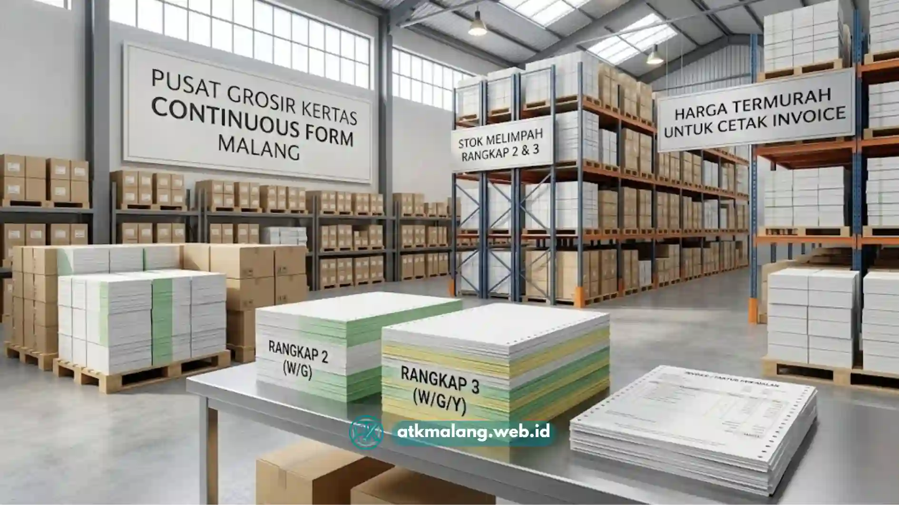

Perusahaan dengan volume transaksi tinggi, seperti retail, distributor, dan manufaktur, membutuhkan sistem pencetakan dokumen yang cepat dan efisien.
Kebutuhan untuk mencetak dokumen invoice, faktur, dan surat jalan tidak bisa diabaikan demi kelancaran operasional perusahaan setiap harinya.
Di sinilah kertas continuous form malang menjadi solusi yang tepat, karena mampu mencetak dokumen secara berkelanjutan tanpa harus mengganti lembar kertas satu per satu.
Artikel ini membahas secara teknis apa itu kertas continuous form, jenis rangkap yang tersedia, hingga alasan perusahaan di Malang Raya memilih Alat Tulis Kantor Malang sebagai mitra pengadaan.
Daftar Isi
Keuntungan Kertas Continuous Form untuk Cetak Invoice Perusahaan
Menggunakan kertas continuous form Malang terbaik untuk cetak invoice dan faktur B2B menjamin proses cetak berantai lancar tanpa macet di printer dot matrix.
Alat Tulis Kantor Malang menyediakan berbagai pilihan continuous form murah rangkap (Ply 1 hingga Ply 4) berkualitas tinggi dengan potongan perforasi yang rapi dan presisi.
Beberapa keuntungan utama penggunaan continuous form untuk operasional administrasi perusahaan antara lain:
- Efisiensi waktu cetak massal, karena kertas tersambung dan tidak perlu diganti manual setiap lembar.
- Rangkap otomatis, sehingga satu kali proses cetak dapat menghasilkan beberapa salinan dokumen sekaligus.
- Perforasi presisi, memudahkan pemisahan lembar tanpa merusak tepi dokumen.
- Kompatibilitas tinggi dengan printer dot matrix, alat cetak yang umum digunakan untuk dokumen transaksi bervolume besar.
- Biaya cetak per lembar lebih ekonomis dibandingkan mencetak satuan menggunakan printer laser atau inkjet.
Karakteristik ini menjadikan continuous form pilihan utama Alat Tulis Kantor bagi perusahaan yang memproses ratusan hingga ribuan dokumen transaksi setiap harinya.
Memahami Jenis NCR Kertas Komputer, Ply 2 vs Ply 3 untuk Administrasi Keuangan
Continuous form, atau dikenal juga sebagai kertas komputer berlubang samping, dirancang khusus agar dapat ditarik secara otomatis oleh mekanisme printer dot matrix melalui lubang-lubang di kedua sisi kertas.
Fitur ini memungkinkan proses cetak berjalan kontinu tanpa jeda mengganti kertas dalam pengadaan Alat Tulis Kantor harian perusahaan.
Salah satu teknologi penting dalam continuous form adalah kertas NCR (No Carbon Required).
Berbeda dengan kertas karbon konvensional, kertas NCR memiliki lapisan kimia khusus di permukaannya sehingga tekanan dari jarum printer dot matrix pada lembar pertama akan otomatis tercetak dengan tebal dan jelas.
Ini membuat cetakan tembus pada lembar kedua dan ketiga, tanpa memerlukan lembar karbon tambahan di antaranya.
Spesifikasi Ukuran & Jenis Kertas Continuous Form B2B
Ply 1 merupakan continuous form tanpa rangkap, terdiri dari satu lembar berwarna putih dengan ukuran standar 9.5 x 11 inch (tersedia juga dalam ukuran dibagi dua atau wartel).
Jenis ini paling sering digunakan untuk cetak laporan internal dan draft dokumen yang tidak memerlukan salinan tambahan.
Ply 2 menghasilkan dua rangkap sekaligus dalam satu proses cetak, terdiri dari lembar putih dan merah pada ukuran standar 9.5 x 11 inch.
Jenis ini umum dipakai untuk invoice sederhana dan nota penjualan yang cukup membutuhkan satu salinan arsip.

Kertas Continuous Form untuk kebutuhan grosir dan pengadaan Alat Tulis Kantor B2B.Ply 3 menghasilkan tiga rangkap sekaligus, terdiri dari lembar putih, merah, dan kuning.
Jenis ini banyak digunakan untuk faktur pajak dan surat jalan yang membutuhkan arsip ganda di sisi keuangan maupun gudang.
Ply 4 menghasilkan empat rangkap sekaligus, terdiri dari lembar putih, merah, kuning, dan hijau.
Jenis ini paling cocok untuk dokumen transaksi kompleks yang melibatkan banyak pihak sekaligus, seperti gudang, bagian keuangan, pelanggan, dan arsip internal perusahaan.
Ukuran 9.5 x 11 inch merupakan standar industri Alat Tulis Kantor, namun tersedia pula opsi ukuran yang dibagi dua (dikenal dengan istilah wartel) untuk kebutuhan dokumen berukuran lebih kecil seperti struk atau nota ringkas.
Pemilihan jumlah rangkap sebaiknya disesuaikan dengan alur distribusi dokumen di perusahaan, misalnya rangkap putih untuk pelanggan, merah untuk bagian keuangan, dan kuning untuk arsip gudang.
Mengapa Memilih Continuous Form di ATK Malang
Alat Tulis Kantor Malang melayani pembelian skala grosir dan kebutuhan gudang untuk perusahaan logistik, manufaktur, retail, dan badan usaha di wilayah Malang, Batu, Kepanjen, Singosari, dan sekitarnya.
Setiap kertas continuous form yang dikirim telah melalui pengecekan kualitas perforasi agar tidak menyebabkan sobekan tidak rapi saat dokumen dipisahkan.
Beberapa keunggulan berbelanja continuous form dan Alat Tulis Kantor di ATK Malang:
- Perforasi rapi dan presisi, mengurangi risiko dokumen sobek saat proses pemisahan lembar.
- Kompatibilitas terjamin dengan printer dot matrix yang umum digunakan di gudang dan bagian keuangan.
- Gratis ongkos kirim untuk wilayah Malang Raya, termasuk Kota Malang, Kabupaten Malang, dan Kota Batu.
- Ketersediaan stok untuk kebutuhan gudang skala besar, cocok bagi perusahaan dengan volume transaksi tinggi.
Dengan pengalaman melayani berbagai sektor usaha, ATK Malang memahami bahwa kelancaran cetak dokumen transaksi berdampak langsung pada kecepatan operasional gudang dan keuangan perusahaan.
Untuk mendapatkan penawaran harga grosir continuous form sesuai kebutuhan rangkap dan ukuran perusahaan, tim ATK Malang siap membantu proses konsultasi hingga pengiriman.
Langkah pemesanan grosir continuous form:
- Tentukan jenis rangkap (Ply 2, Ply 3, atau Ply 4) sesuai alur dokumen perusahaan.
- Konfirmasikan estimasi kebutuhan bulanan melalui WhatsApp di 088989643555.
- Dapatkan penawaran harga grosir Alat Tulis Kantor dan estimasi waktu pengiriman.
- Kertas dikirim langsung ke lokasi gudang atau kantor tanpa biaya tambahan untuk area Malang Raya.
Kesimpulan Praktis
Kertas continuous form menjadi solusi efisien bagi perusahaan yang memproses dokumen transaksi dalam volume besar, terutama untuk kebutuhan invoice, faktur, dan surat jalan. Memahami perbedaan jenis rangkap (Ply 2, Ply 3, Ply 4) serta memilih supplier dengan perforasi presisi dan layanan pengiriman yang andal, seperti Alat Tulis Kantor Malang, membantu menjaga kelancaran operasional administrasi perusahaan tanpa hambatan teknis di lapangan.